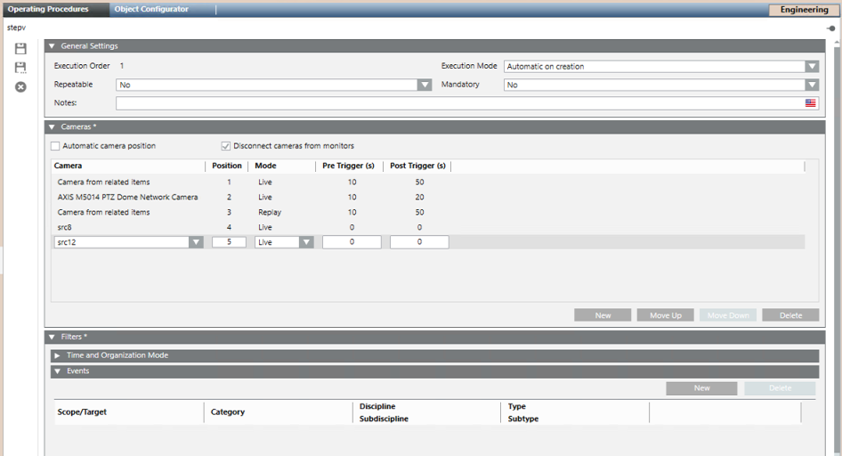

Video Step in Assisted Treatment
This section provides background information on configuring the video step of an operating procedure for assisted treatment. For the related workflow, see Configuring an Operating Procedure with Video.
In System Browser, when you select the video step of an operating procedure, the Cameras expander lets you configure the cameras that will display live/recorded video when the video step is executed. In the Camera list you can choose to display the 'related item' cameras associated to the point in alarm, as well as other cameras that you link explicitly.

Automatic Camera Position
This flag determines if the monitor layout of the video step is populated with cameras dynamically, or based on fixed positions.
Automatic camera position set | Automatic camera position cleared |
|---|---|
Monitors populated dynamically | Monitors populated based on fixed positions |
When Automatic camera position is set, in the Camera list you can specify a combination of:
| When Automatic camera position is cleared, in the Camera list you can specify a combination of :
|
If a row specifies "All cameras from related items", all those cameras will populate the monitors, before going on to the next row. The specific positions will depend on the number of related items cameras that there are. You can insert separate entries for each Mode (Live or Replay). For example:
| The first row that specifies "Camera from related items" will show the first camera from related items. The second "Camera from related items" row will show the next camera, and so on. The progression is separate for each Mode (Live or Replay). For example:
|
The monitor layout is populated dynamically, starting from the top row of the Camera list. You can move rows up and down (with Move Up and Move Down) to change the order, but "all cameras from related items" will always display consecutively | The monitor layout is populated based on the exact Position that you specify for each camera. The order of the rows does not have an effect on position. |
NOTE: The number of related items cameras available depends on those associated to the object in alarm. See Associating Cameras to System Objects.
NOTE: The layout positions are referred to the monitor group for events assigned to the station. Check that the group has enough monitors to accommodate all the video streams you have assigned.
Mode (Live / Replay)
This field sets whether the camera or cameras specified on a row will display live video or play back recorded video.
Live | Replay |
|---|---|
Mode = Live sets the camera to display live video when the video step executes. | Mode = Replay sets the camera to play back recorded video when the video step executes. |
If configured on "All cameras from related items", it sets all those cameras to display live video | If configured on "All cameras from related items", it sets all those cameras to play back recorded video. |
(Only for steps with Automatic execution mode): You can configure the Pre-Trigger and Post-Trigger fields to additionally create a recording from this same camera.
| The Pre-Trigger and Post-Trigger fields define the span of time around the event to play back:
|
NOTE: The Pre-Trigger and Post-Trigger settings of the operating procedure step supersede the corresponding event recording options defined in the main Video node (see Global Video Control Commands).
Disconnect Cameras From Monitors
When set, this flag disconnects the video streams from the monitor layout after the assisted treatment is closed. This ensures that only the video streams pertaining to the current video step are displayed, because it clears any "old" video sources from preceding video events.
NOTICE

In special configurations that show related video streams in the secondary pane during assisted treatment, Disconnect cameras from monitors will also stop the video streams in the secondary pane when the assisted treatment is closed.
Execution System
Applies only for distributed configurations with multiple Desigo CC servers: In the Execution System drop-down list select the Desigo CC system that will execute the video commands, for example, recording and tagging.
Filters
When you select a camera in the Camera list, the Filters expander lets you restrict the display of the selected camera to certain events or situations, as defined in the Events and Time and Organization Mode expanders.
- If you do not configure anything here, the camera will always display when the video step executes.
- If you do configure filters here, the camera will display during the video step if the conditions specified in the Events AND Time and Organization expanders are both true.
- Make sure any filters configured on cameras are not mutually exclusive with those that trigger the operating procedure as a whole. Otherwise the camera will never display.
- When a camera is filtered out, its position in the monitor layout remains blank (if Disconnect flag set), or continues displaying the video source previously connected to that monitor (if Disconnect flag cleared).
For related instructions, see Apply a Filter to Selectively Display a Camera.